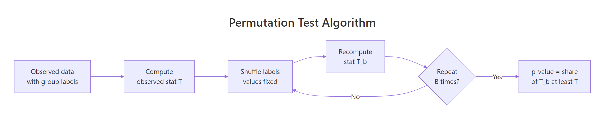
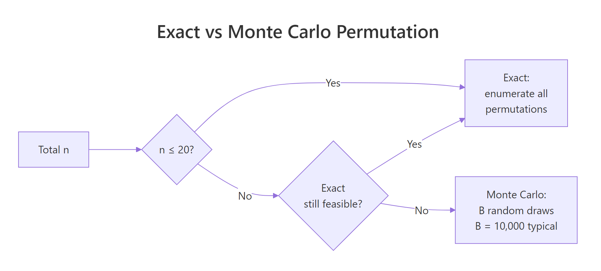

Permutation Tests in R: Exact p-Values via Randomization
Permutation tests compute exact p-values by shuffling your observed data under the null hypothesis and counting how often you see a test statistic as extreme as the real one. You get a valid p-value without assuming normality, constant variance, or large samples.
How does a permutation test produce an exact p-value?
Classical tests like the t-test assume a specific sampling distribution for your statistic. Permutation tests throw that assumption away. If the null hypothesis is true, the group labels carry no information, so shuffling them should produce results just like the one you observed. You shuffle many times, collect the test statistic each time, and ask what fraction of those shuffled statistics are at least as extreme as your original.
Let's make this concrete with the mtcars dataset. We want to test whether automatic and manual cars differ in miles-per-gallon. Our test statistic is the absolute difference in group means.
The observed gap is 7.24 mpg. Across 10,000 shuffles, only a handful produced a gap that large or larger, so the p-value lands near 0.0002. That's strong evidence the null (no transmission effect) is wrong, and we got there without invoking the Central Limit Theorem or Welch's adjustment.
The p-value formula is:
$$p = \frac{1 + \#\{|T^{(b)}| \geq |T_{\text{obs}}|\}}{B + 1}$$
Where:
- $T_{\text{obs}}$ is the statistic on the real data
- $T^{(b)}$ is the statistic on the $b$-th shuffle, for $b = 1, \dots, B$
- The $+1$ in both numerator and denominator counts the observed data as one valid permutation and keeps the p-value from ever being exactly zero.

Figure 1: The permutation test loop: shuffle labels, recompute the statistic, repeat, then read the p-value off the collected values.
Try it: Change the test above to a one-sided alternative, manual cars get better mileage than automatic. You only count shuffles where the signed difference is at least as large as the observed positive gap.
Click to reveal solution
Explanation: Drop the abs() and compare signed statistics. Since the observed difference is positive and the null distribution is roughly symmetric around zero, the one-sided p-value is about half of the two-sided one.
When should you reach for a permutation test instead of a t-test?
The t-test is fast and powerful when its assumptions hold. When they don't, its p-values can mislead, sometimes dramatically. Permutation tests replace those assumptions with a single, weaker one: exchangeability under the null, meaning the joint distribution of the data doesn't change when you relabel observations.
Reach for a permutation test when any of these are true:
- Sample size is small (roughly $n < 30$) and the data look skewed or have outliers.
- The measurement is ordinal, or the statistic isn't a mean (median, trimmed mean, ratio, correlation).
- You need a test for a custom statistic with no standard distribution theory.
Let's compare a t-test and a permutation test on a small, skewed sample where the t-test starts to creak.
The t-test reports p = 0.10, which most analysts would call "not significant." The permutation test reports p = 0.07, closer to the edge and arguably more trustworthy given the skew. Neither tells you to pop champagne, but the permutation version isn't penalised for violating normality because it never assumed it.
Try it: Re-run the comparison above with n = 80 per group instead of 8. With more data, the Central Limit Theorem kicks in and both methods should agree.
Click to reveal solution
Explanation: With 80 observations per group, both p-values are tiny and agree to three decimals. The t-test's distributional assumption is effectively met by the large-$n$ CLT, so the two approaches converge.
How do you run permutation tests with the coin package?
Writing the shuffle loop by hand is great for understanding. For production, the coin package is the reference implementation. It provides a unified permutation framework across two-sample, k-sample, paired, correlation, and contingency-table tests, with three ways to compute the null distribution: "exact", "approximate" (Monte Carlo), and "asymptotic" (closed-form approximation).
The core two-sample function is oneway_test(), which implements the Fisher-Pitman permutation test.
On this 10-row subset, the exact p-value is 0.40. coin enumerates every one of the $\binom{10}{4} = 210$ possible label assignments (there are 4 manuals and 6 automatics in the subset), computes the standardised statistic for each, and returns the exact proportion that are at least as extreme as the observed one.
For the full 32-row dataset, exact enumeration would need to check $\binom{32}{13}$ shuffles, around 350 million. That's feasible but slow. The pragmatic option is Monte Carlo via approximate().
nresample = 10000 takes 10,000 random shuffles and returns a p-value with a Monte Carlo standard error around $\sqrt{p(1-p)/B}$. At this effect size the reported value is "< 1e-04", matching the manual loop we ran at the top of this post.
"exact" when n is small, "approximate" for medium n, and "asymptotic" only when you trust the large-sample approximation. The asymptotic option skips randomisation entirely and uses the limiting normal distribution of the standardised statistic. It's fast but loses the headline benefit of a permutation test on small samples.Try it: Run an approximate permutation test comparing mpg across the three-level cyl factor (4, 6, 8 cylinders). oneway_test() handles k-sample comparisons automatically.
Click to reveal solution
Explanation: The same oneway_test() call works across more than two groups, returning a chi-squared-style statistic. With three cylinder classes this is the permutation analogue of a one-way ANOVA.
How do you test paired data and correlations via permutation?
The shuffle strategy changes with the design. For paired data, you don't reshuffle freely across all observations, that would break the pairing. You only flip the sign of each within-pair difference, because under the null "no treatment effect" the sign of each paired difference is a fair coin flip.
The built-in sleep dataset records the extra hours of sleep for 10 patients under two drugs. Each patient appears twice. Let's test whether group 2 beats group 1.
The mean within-subject difference is 1.58 hours, and the permutation p-value is 0.005. Under the null, we randomly flipped the sign of each of the 10 differences and computed the mean; only about 50 of 10,000 such resamples produced an average at least as extreme as 1.58 in absolute value. The paired t-test gives a similar p-value here, but the permutation version survives if those per-subject differences were skewed or had outliers.
For correlation, the shuffle is different again. You permute one of the two variables while keeping the other fixed. That destroys the pairing between them, which is exactly what "no correlation" means.
The observed Pearson correlation is 0.87. Across 10,000 random pairings (one vector shuffled, the other fixed), not a single permutation produced a correlation that extreme, so the p-value comes out at the minimum possible value of $1 / (B + 1) \approx 0.0001$.
sample() on both x and y, the null distribution stays the same but you double the computational cost and introduce extra simulation noise. Shuffle one side only.Try it: Compute a permutation p-value for the Spearman rank correlation between iris$Sepal.Length and iris$Petal.Width. The only change is the method argument.
Click to reveal solution
Explanation: Pass method = "spearman" to cor() in both the observed and permuted calls. Sepal length and petal width are strongly rank-correlated, so the p-value bottoms out.
What if exact enumeration is infeasible?
Exact tests enumerate every possible label assignment. The count grows as $\binom{n_1 + n_2}{n_1}$ for a two-sample test, which explodes fast.
By $n = 30$ you're already at 155 million shuffles, where coin's "exact" method starts to feel slow. By $n = 50$ you're well past 100 trillion and exact enumeration is off the table. Monte Carlo approximation sidesteps this by drawing $B$ random shuffles instead.

Figure 2: Choosing between exact enumeration and Monte Carlo approximation as sample size grows.
How many shuffles is enough? Since the p-value is a proportion, its Monte Carlo standard error is:
$$\text{SE}(\hat p) \approx \sqrt{\frac{p(1-p)}{B}}$$
At $p = 0.05$ and $B = 10{,}000$, the SE is about 0.0022, so a reported p-value of 0.050 sits in a ±0.005 margin. That's tight enough to distinguish 0.04 from 0.06.
Ten thousand shuffles already nail the p-value to two decimals. A hundred thousand is overkill for most reports but cheap to run.
coin package uses by default, and runs in under a second on modern hardware for simple statistics.Try it: Estimate the Monte Carlo SE for a reported p-value of 0.02 at B = 5000. Use the formula above.
Click to reveal solution
Explanation: At B = 5000 and p = 0.02, the SE is about 0.002, so 95% of Monte Carlo runs will land within ±0.004 of the true permutation p-value. Doubling B to 10,000 cuts that to roughly ±0.003.
How does a permutation test differ from the bootstrap?
Permutation tests and the bootstrap both resample your data, so they're easy to confuse. They answer different questions.
- Permutation test shuffles labels under the null hypothesis to produce a p-value. It asks: how surprising is this statistic if the null is true?
- Bootstrap resamples observations with replacement from the observed data to build a sampling distribution for a statistic. It asks: what's the uncertainty around this estimate?
Same data, different questions. You might run both in the same analysis, a permutation test for significance, a bootstrap for the confidence interval around the effect size.
Manual cars average 7.2 mpg higher (p = 0.0002, bootstrap 95% CI 3.2 to 11.3). The permutation test tells you this difference is very unlikely under the null of no effect; the bootstrap tells you the effect is somewhere between 3 and 11 mpg. Different verbs, different outputs, complementary insights.
Try it: Match each scenario to the right tool. The solution explains why.
Click to reveal solution
- A: Bootstrap. You want a confidence interval for an estimate, not a test. Resample with replacement, recompute the median, collect 2.5th / 97.5th percentiles.
- B: Permutation test. You want a p-value for "no effect of design." Shuffle the design labels, recompute the conversion gap, count extremes.
- C: Bootstrap. Again a precision/uncertainty question. Permutation would give you a p-value, not a standard error.
- D: Permutation test. You want a hypothesis test for zero correlation. Permute one of the two vectors to destroy the link under the null.
Rule of thumb: CI / standard error → bootstrap. p-value / hypothesis test → permutation.
Practice Exercises
Exercise 1: Build a generic permutation test function
Write a function my_perm_p(x, y, B = 10000) that returns the two-sided permutation p-value for mean(y) - mean(x). Use only base R. Test it on mtcars$mpg split by am.
Click to reveal solution
Explanation: The function pools the two samples, draws a random subset of size length(x) as the "new x" group, and computes the shuffled mean difference. The +1 correction in numerator and denominator keeps the p-value bounded away from zero.
Exercise 2: Permutation test for a difference in medians
Medians have no simple standard-error formula, which makes them a natural fit for permutation tests. Write code that tests whether iris$Sepal.Length differs in median between the setosa and versicolor species.
Click to reveal solution
Explanation: Replace mean with median in the statistic and you have a permutation test for median differences, no asymptotic theory required. Setosa sepals are about 0.8 cm shorter in median than versicolor sepals.
Exercise 3: Spearman correlation permutation with coin
Use the coin package's spearman_test() function (which internally uses permutation machinery) to test the Spearman correlation between mtcars$hp and mtcars$mpg. Use 10,000 approximate resamples.
Click to reveal solution
Explanation: spearman_test() wraps the permutation machinery around ranked data. Higher horsepower means lower mpg, with a Z of -4.8 and a Monte Carlo p-value below 1 in 10,000.
Complete Example
Let's run a full permutation analysis on the chickwts dataset. It records chick weights by feed type. We'll compare just two feeds, casein and sunflower, and produce both an exact permutation test and a manual Monte Carlo check.
The exact test reports p = 0.85, and the manual Monte Carlo check reports p = 0.85. Despite a small visual gap between casein and sunflower means, there's no evidence the two feeds differ in chick weight at week six. The two approaches agree to three decimals, a useful sanity check that your hand-rolled code matches a trusted implementation.
Summary
| Test | Statistic | When to use | Base R approach | coin function |
|---|---|---|---|---|
| Two-sample location | Mean difference | Compare two independent groups | replicate(B, sample(...)) |
oneway_test() |
| k-sample location | F-like / chi-squared | Compare 3+ groups | Manual with replicate() |
oneway_test() |
| Paired location | Mean of paired diffs | Pre/post, matched pairs | Sign-flip replicate() |
wilcoxsign_test() |
| Correlation | Pearson or Spearman | Test association | replicate(B, cor(x, sample(y))) |
spearman_test() |
| General independence | Generic | Any relation between two variables | Custom | independence_test() |
Key takeaways:
- Permutation tests give exact p-values with no distributional assumption, only exchangeability under the null.
- Use
"exact"when $n$ is small (say, $n \leq 20$),"approximate"for medium $n$, and"asymptotic"only when the large-$n$ approximation is clearly safe. - The $+1$ correction in numerator and denominator prevents p-values of exactly zero and keeps reported values valid under Monte Carlo sampling.
- Permutation answers "is there an effect?" while the bootstrap answers "how big is the effect?". Use both in a single analysis where appropriate.
- The
coinpackage covers most common tests; falling back to a hand-rolledreplicate()loop is fine for custom statistics.
References
- Hothorn, T., Hornik, K., van de Wiel, M. A., & Zeileis, A. A Lego System for Conditional Inference, American Statistician 60(3): 257-263 (2006). Link
- coin package vignette. Implementing a Class of Permutation Tests: The coin Package. Torsten Hothorn, CRAN (2021). Link
- Good, P. Permutation, Parametric, and Bootstrap Tests of Hypotheses, 3rd Edition. Springer (2005). Chapters 2-4.
- Phipson, B. & Smyth, G. K. Permutation p-values should never be zero: calculating exact p-values when permutations are randomly drawn. Statistical Applications in Genetics and Molecular Biology 9(1) (2010). Link
- Ernst, M. D. Permutation Methods: A Basis for Exact Inference. Statistical Science 19(4): 676-685 (2004). Link
- Mangiafico, S. Summary and Analysis of Extension Program Evaluation in R. Chapter K: Permutation Tests. Link
- R Core Team. Documentation for
sample()andreplicate(). Link
Continue Learning
- Bootstrap CIs in R: Distribution-Free Confidence Intervals for Any Statistic: the companion technique, resample with replacement to quantify uncertainty around any statistic.
- t-Tests in R: One-Sample, Two-Sample, and Paired: the parametric alternative when normality holds and you want fast, closed-form p-values.
- Wilcoxon, Mann-Whitney and Kruskal-Wallis Tests in R: rank-based non-parametric tests that are themselves special cases of the permutation framework.